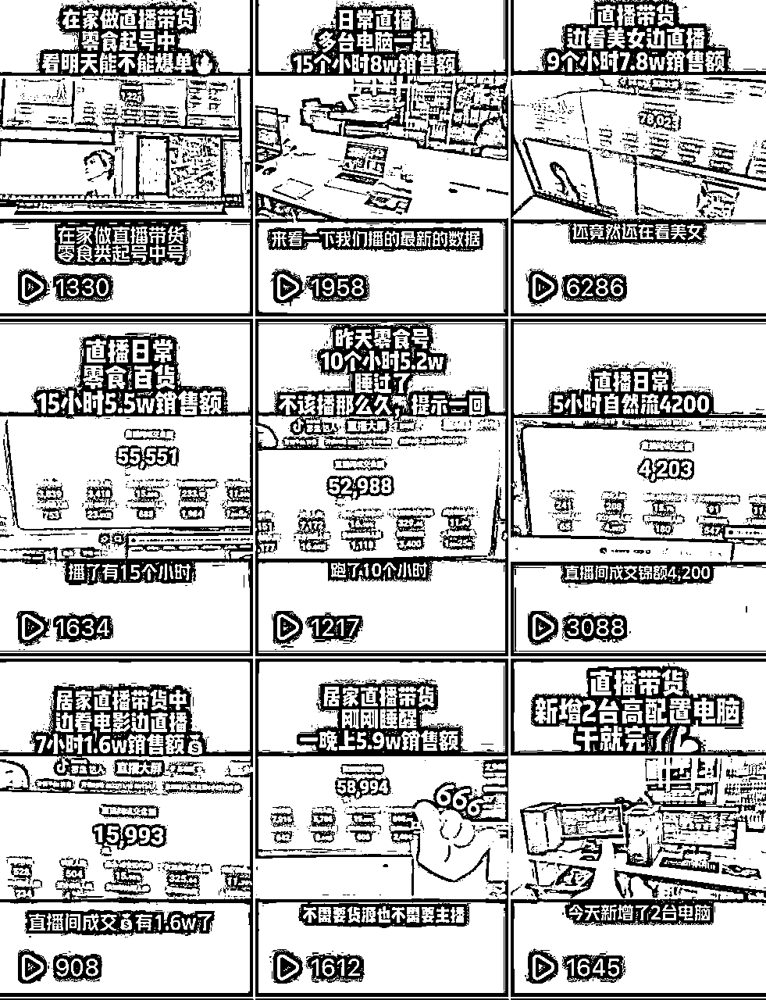
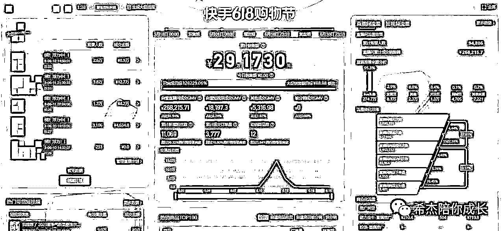
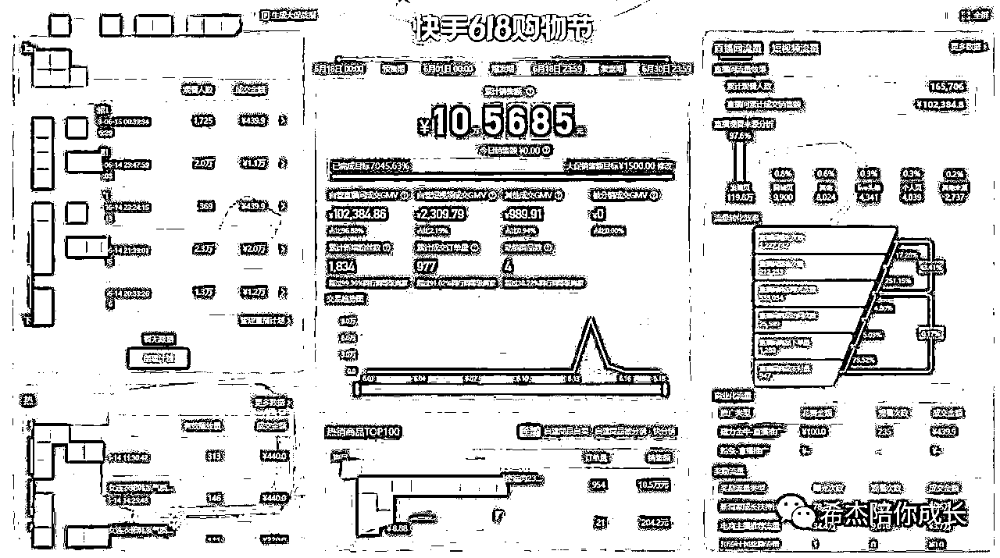
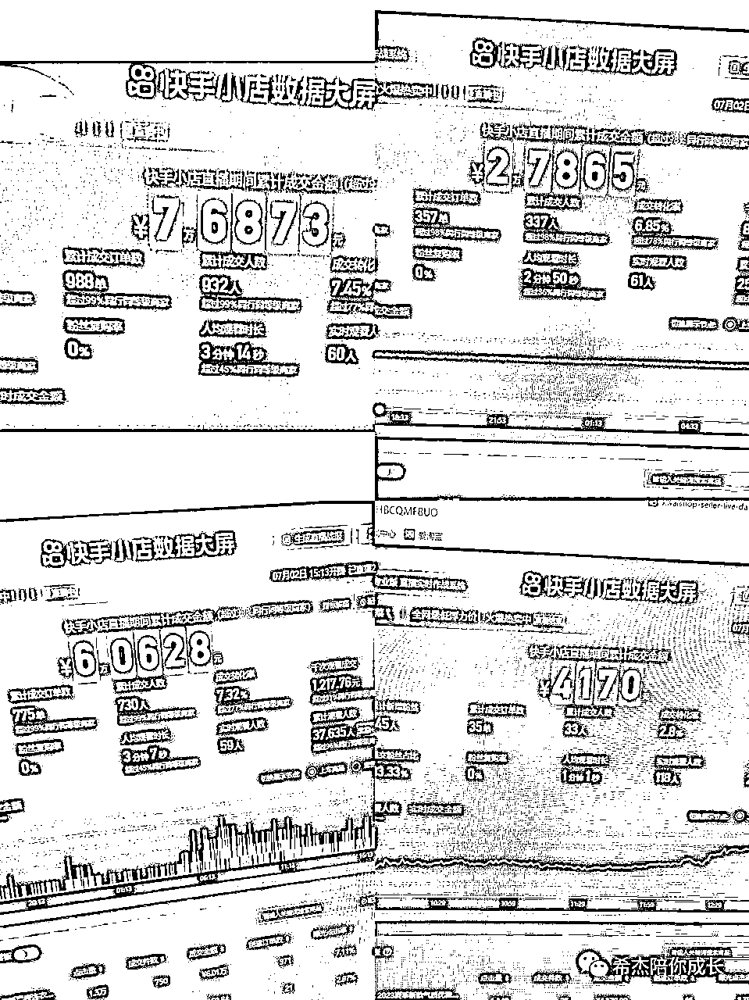
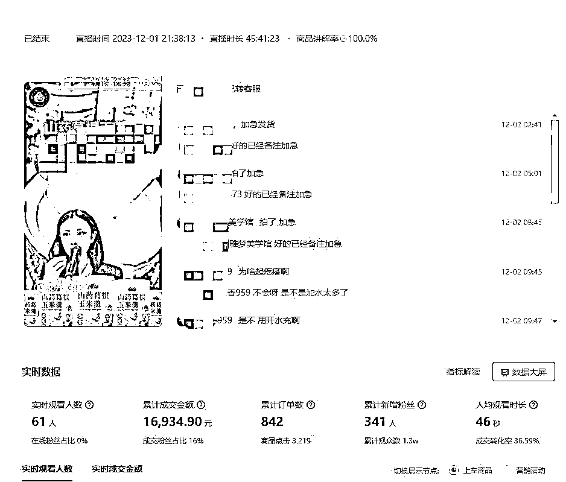
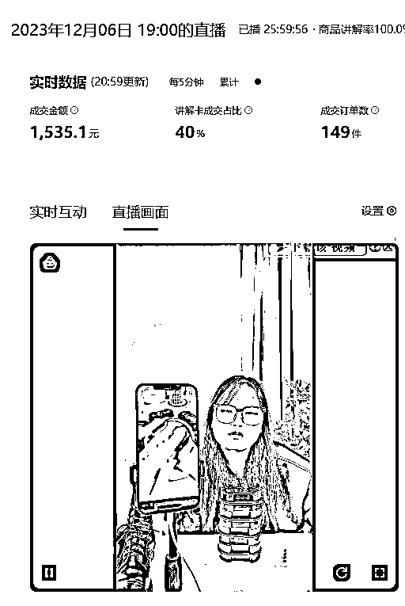
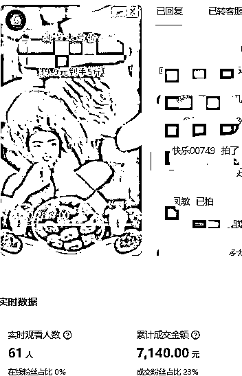
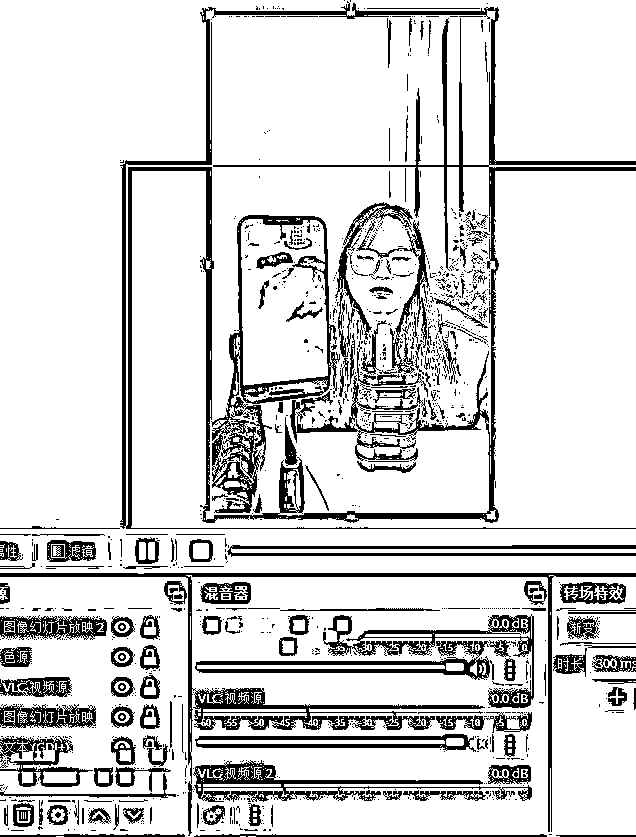
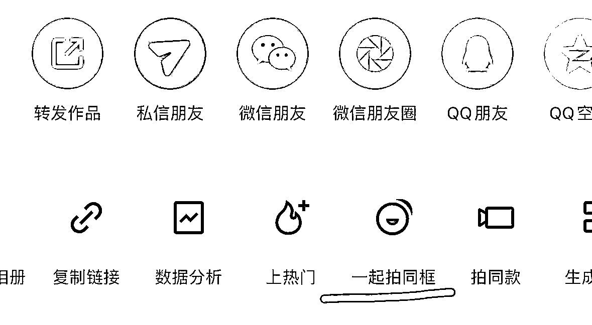

来源：https://qh1aipztmn.feishu.cn/docx/LFwUdIkNwofSttxpbDUcagavnjs
生财的圈友大家好，我是韩希杰，从2022年9月份开始，我开始接触到电商，主要是抖音无人直播带货、快手无人直播带货，最终在快手取得了成绩，今年10月份我们直接和快手官方内部达成了合作。
从2022.9年躬身入局到现在，我个人跟随团队在快手赛道，累计变现超过了两百万。
回想一年前，我刚从抑郁症中走出来，从2013-2023年，十年的时间，家里面为了给我治愈抑郁症，花费了近百万，最难的时候，在重症监护室里面躺了7天才被救回来，一个月都没有出过医院，2020年自己逐渐清醒过来，这十年的心酸，没有人知道，但是家里面再怎么难，爸妈都不告诉，甚至弟弟都比我知道的多，对于爸妈来说，不求我大富大贵，只希望我能平平安安的就好了。但对于我来说，我不认命，既然我已经恢复健康了，我有了新的生命，我就应该努力的去拼一次，自己想要什么就去坚定拼命的去争取。
真的是天无绝人之路，9月份刷抖音的时候偶然认识了我现在的合伙人辉少，他当时还在做抖音无人直播，看他比我还小三岁，却取得了这么好的结果，决定跟他干，说实话，当时还很忐忑，抖音无人直播对于自己就是一个全新的事物，万一没有结果怎么办呢？ 一年之后在想一下，当时的决定是我这三年做的最正确的决定了。

当时还是在郑州，做抖音无人取得了一些小结果，发抖音庆祝一下。
10月份我们从抖音转到快手，22年10、11、12月这三个月是我们飞速发展的三个月，那个时候还是处于疫情状态下，平台的规则也很轻松，卖什么都特别好卖，我们当时卖一些生鲜类的牛肉、牛碎骨等，单天最高两台电脑能卖到100百万gmv，佣金30% (0退货，生鲜类保质期只有7天）
一天的时间赚了30万，真的激动疯了，没想到钱还可以这样赚，接下来半个月的时间，我们都保持利润在10-20万/天，一天的时间，真的比我过去一年赚的都多，电商，完全打开了我的认知，当时我就下定决心，一定要在这个行业坚持下去，接下来一年，也开始了我们团队的狂飙之路，从河南焦作、到郑州、在到23年搬到广州番禺，从小打小闹到团队规模化去打，游刃有余，厚积薄发，一年的时间，我们做取得了以下成绩。
1、在广州番禺区拿下了800平的直播带货场地，成立了新的带货公司，我从普通的运营成为了合伙人。
2、自己彻底的帮助家里面还清了负债，我也从抑郁症中完全走出来，并成功减肥了30斤。
3、团队做到了快手无人的头部，和快手官方有了内部合作。
4、团队直营业绩月gmv平均2000万以上。
5、同时陪跑了超过1000名线上学员，100名线下学员。
我一直相信天道酬勤，选择一个好的平台，然后付出超越常人的努力，结果一定不会差。这一年，我几乎每天都是12点多才休息，早晨早的时候4-5点就起来跑账号了。但我知道，现在取得的成绩只是很小的一步，未来很长，需要继续的努力。一年的成长，我越来越认知到人取得的成绩除了靠外界环境，信息差、资源、资金、人脉等都很重要。逆风翻盘、涅槃重生，每进步一小步，都要拼命的去争取，全力以赴才可以，拿出执行力，行动起来，只有执行力才是拉开人与人之间差距的关键因素。
“你必须人生有一段经历是自己走过去的，你充满了痛苦，然后充满了孤独，但那个东西叫做”成长“。未来的命运牢牢掌握在我们自己手里，加入生财有5个月的时间了，这5个月，我在生财学习到了很多，认识到了很多的大佬。在生财收益很多、所以也很想将自己的创业经历简单分享出来，希望能和大家共同成长进步。
谢谢大家听我啰嗦了这么多，接下来给兄弟姐妹们分享一下我们最近和快手官方合作的内部打法，希望能帮助到大家。
从2022年9月份团队从抖音无人转到快手无人直播带货以来，我们团队经历了很多打法，像是去年10-12月份的时候，做无人直播带货真的特别简单，直接转播抖音上的直播间都能出单，什么去重、减违规、防封控，都不需要，平台管理的很轻松，今年7-8月份我们打搜索流和短视频流量，主要是卖一些女装连衣裙、冰丝裤，客单价在100元左右，仅在广州，我们自营+学员业绩就做到了1000万的gmv，以下是部分学员的成绩截图：



主要是平台规则一直在变，我们也是一直在改变，顺应平台规则，直到今年9月份快手开始大批量的封无人直播间，很多团队都做不下去了，我们的账号也被封闭了很多，线上结算也很难了，我们团队就用自己在快手方面积累的资源，联合快手内部高管，推出了内部4.0打法，就是我们的账号开播前先内部审核一遍，审核通过率是70%，比如说你准备10个已经实名过的账号，会有7个通过，通过后会进入内部白名单，那么这个账号就是稳赚的，基本上可以卖到1万左右的gmv，保底是2千左右的收益，一个月过审核30个账号，操作3台电脑卖货，平均就是5-6万的收益， 然后过审的账号不用注销，第二个月还可以循环使用，继续开播。
这是我们基本的最新4.0打法，新打法不会像我们之前的3.0打法那样一场可以卖到 30万、20万等等，但是胜在稳定，卖一些百货、滋补品、养生品、化妆品等，退货率低，线下结算快，很稳定。以下是我们自己跑出来的自营数据。



虽然gmv不是很高，追求稳定。
第一天：搭建直播间。
（主要是通过obs将我们在抖音上已经录制好的素材放在快手上，通过快手直播伴侣开播，有完整的教学视频，有需要的圈友可以私聊我）

第二天：找对标账号。
找对标要求：
1：去抖音平台找对标账号，并且对标账号没有在快手平台发布任何作品
2：对标账号粉丝数量不超过10w，10w以下的对标账号
3：对标视频多数超过2分钟 ，四五分钟剧情最好
4：找美食账号，（不露脸的）美食，烘培这类找15个对标账号，创建文档并记录下来发给我们
5：对标视频数量要多，时长达到一分半以上的视频要超过20个
(详细的在视频）
第三天：发作品
收到我们给的作品后，发布视频 2条 ，时间随意 ，每条发布间隔最低一个小时
发布完之后去快手主页打开作品，点击右下角分享，看否有一起拍同框 功能，有的就留下，没有就删除作品,换一个视频继续发，如果还是没有一起拍同框，及时删除作品，联系我们老师
发布两条可以过同框的作品即可。
(发作品的目的在于养账号，将账号的权重给养起来）

第四天：掌握电脑端如何开播，以及开播后的细节
一：检查直播间
开播后，立刻进入直播间，看看你的音频，场景，背景音乐有没有问题，背景音乐高的话就底一点，让进入到直播间的用户有好的购物体验感
二：设置商品卖点
商品上车之后，产品下方有商品描述，咱们点击商品描述，把商品优势打在描述里面，有助于转化，用户都可以看到，例如（库存不多，仅剩3单！）（254个家人说好看实惠）自己可以根据自己的想法打
三：公屏刷屏
进到直播间一个人说话都没有是不是很冷清，所以要刷屏来烘托直播间气氛，去催单，以及让大家知道咱们是在做什么活动！（刷屏话术到时候会发给你，品不一样刷屏话术也不一样）
四：公屏回复
公屏客户有问题打出来，在公屏上要及时给客户回复，转化会非常高
五：做好放违规细节，本场结束后要调整一下obs。
六: 掌握好手机小店，网页快手小店如何选品、调品。
第五天：如何录制同行的直播间。
录制主素材最低4个小时以上，如果录制的直播间关播了，可以等他开播继续录。
第六天：过内部审核、定品以及找爆款、找对标视频。
过审后基本上这个账号就稳赚了，但是无人直播70%都是靠选品，素材很重要。
定品：
品的浮动性比较大，具体播什么品根据开播时间决定，需要我们定品。
发布短视频：
找30-40条爆的短视频，下载下来，手机上也要下载下来，在手机上面过一下快影发布，手机端过了快影的发布5条左右就可以，发布完就去开播，什么时间段开始陆陆续续大批量发布作品，电脑发布100条，手机端过了快影的发布100条，这个时间与我们沟通。
第七天：手机如何通过快影发布视频，进行实操训练。
以上就是我们快手最新的4.0打法基本的准备阶段，准备好后就可以直接开播卖货了，平均开播1-3天，基本上2000元保底收益就到手了。
坚持不懈、日拱一卒
在好的项目，也不能随便开播一场就打爆，一场直播拉满48个小时，轻松收益过万，这不是叫项目，而是叫天上掉馅饼了。很多新手看到别人很好的成绩后，日入过万，迫不及待的就入场，抱着很高的期待去做项目，结果发现过去了一周，都已经开播了2个账号，怎么还没有收益，于是开始怀疑自己，怀疑项目，进而陷入无尽的内耗当中。
而实际上，做任何项目，我们都会存在新手过渡期，都是不断地从菜鸟进阶成高手，熬夜开播不出单是少不了的，哪怕是我们现在的内部报白4.0模式，几乎就是躺赚了，账号审核中也会有30%的不通过率，很多人心态就会有问题，我好不容易找了三个账号，结果也用不了，知道现在实名有多难嘛？直播带货，就像是指数一样，很考验心态，有时候，你还不知都怎么回事，一场直播卖上10万、20万，佣金3-5万到手了，也有可能辛辛苦苦一个月，账号就是不爆，每天一两千，两三千的在这卖着，看着别人一场直播顶得上自己一个月了。越是这个时候，越是很考验心态，越要静下心来把一些开播的细节给做好，沉住气，等待爆单的时刻来临，默默耕耘，岁月不负有心人的。
最后，感谢大家能看到这里，第一次在生财圈分享，可能写的不是很好，大家多担待，接下来我会输出更多的精华文章，对于快手无人直播感兴趣的朋友、以及在做互联网项目的朋友欢迎一起交流，祝愿大家都能够生财有术，事业更上一层楼~